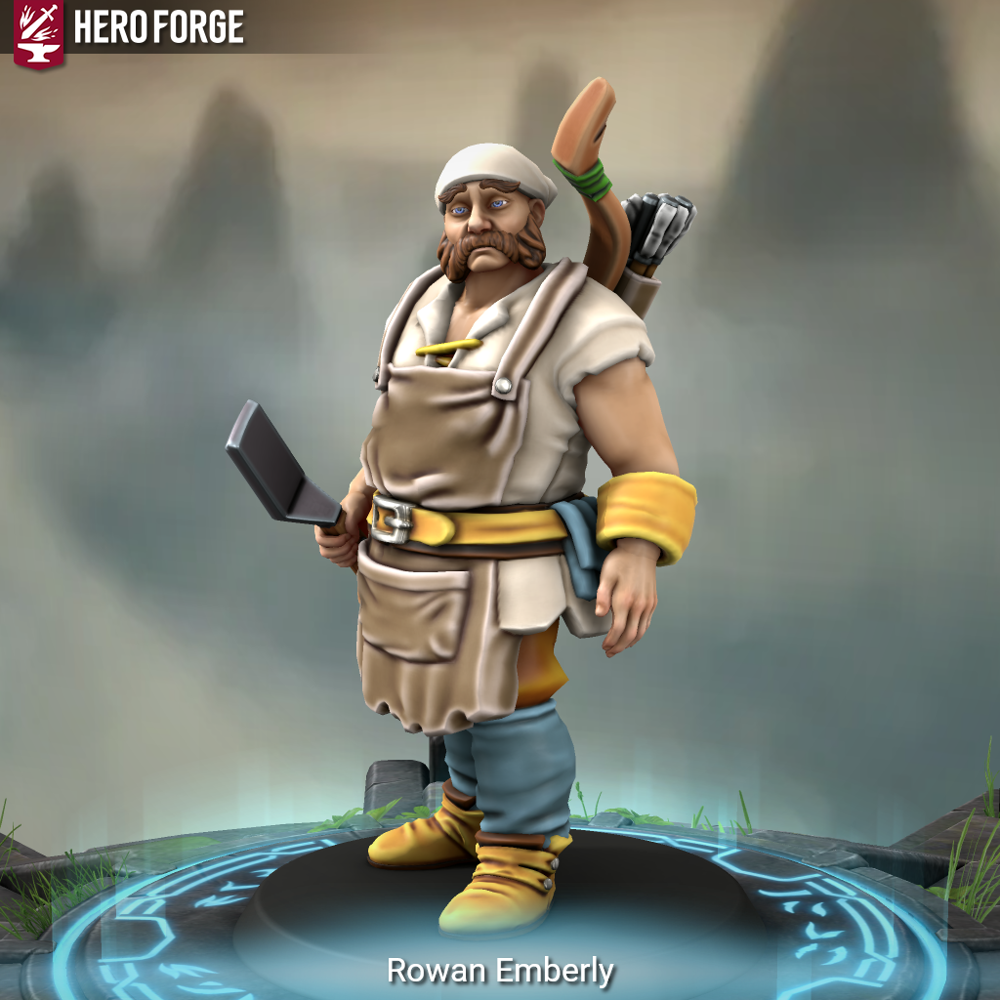

Rowan Emberly - Is This Anything?

Meet Rowan Emberly:
Born and raised in the small village of Mossbreak, Rowan grew into adulthood as the heart of its only tavern, “Emberly’s Restâ€. His livelihood was more than a trade; it was a daily ritual. Each dawn, he’d wake before the sun, slip into the bordering forest with bow and blade, forage for fresh greens and mushrooms, hunt small game, cast lines for fat trout or brave a chill dip for shellfish, then haul it all to his bustling inn for the day’s first preparations.
His skills with nature and survival were earned through necessity, keeping the tavern’s larder full of homegrown and wild flavors, his ales crisp, his meals legendary. A master of forest trails, he could spot deer tracks at a glance, snare a grouse from pungent undergrowth, and always knew which stream would bring luck. It was the rituals – his lone walks, the sounds of birds at dawn, that gave life meaning and structure.
People loved him for it: Emberly’s Rest was refuge, laughter, news, and comfort. No one passed through Mossbreak without a night at his fireside. Toughs who started fights woke up in the morning with bruises and gratitude for having been steered right, and even the surliest strangers would leave softened by his good humor. The village was his family.
Then the imperial soldiers came. The reasons weren’t clear; perhaps the inn’s reputation for resistance, or a refusal to pay a bribe, or just simple cruelty. He awoke in the choking smoke, saving a few good souls, but the Willow Hearth was gone. Irreplaceable. Now, when confronted by imperial agents, his easygoing nature boils into fierce vengeance. His cool exterior masks a tempest; the hunt is on. His aim in the woods is sharp, but when cornered he wields meat cleavers and skillet with the same fury as his bow.
His reputation in Mossbreak remains sympathetic; he’s regarded as a survivor and a folk hero. Old patrons from distant towns might become allies or informants as he hunts the men who destroyed his life and those who sent them. Rivalries or grudges emerge: perhaps a jealous local, a cruel tax collector, or a traitorous traveler who gave the government a reason to strike. Whether true or not, he keeps his eyes open for betrayal.